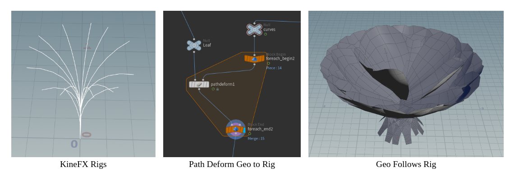
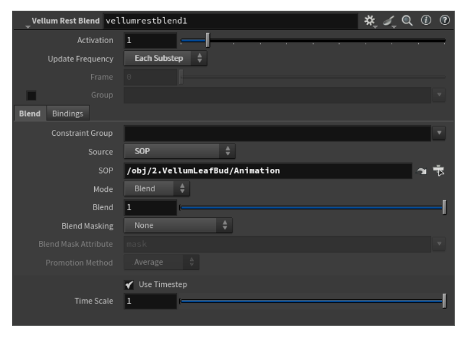
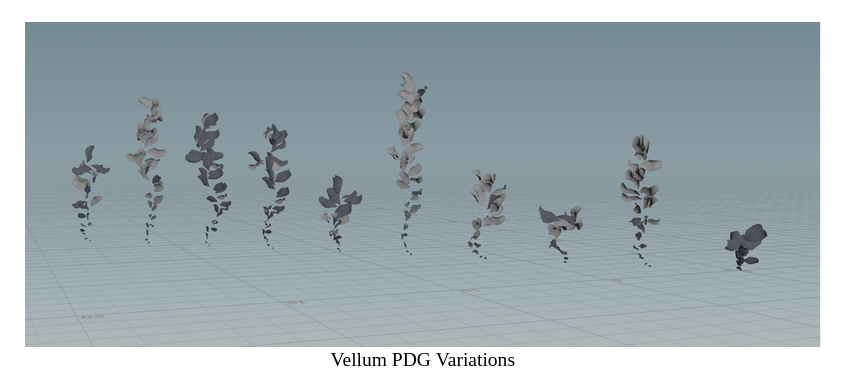
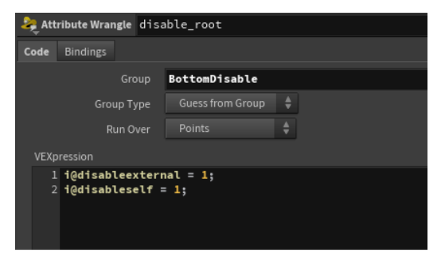
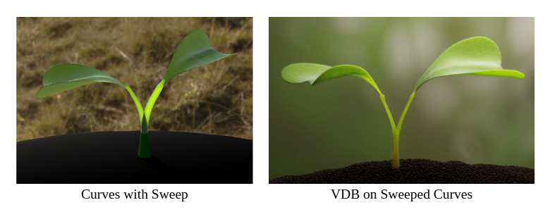
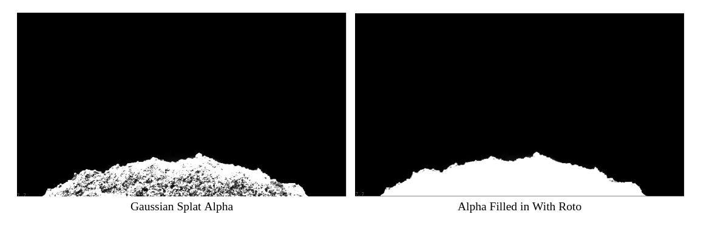

To control Vellum, there were unusual things needed to be done a lot of which involved hand animating a certain aspect.
1. Using multiple “petals” to force internal “petals” together, and then blasting so that only two leaves remain
2. Having a basic Rig on the plant was crucial because the vellum is ultimately following the animation

3. The balance between pinning enough points, but not too much so that there is natural movement, hard pins would allow the leaves to stick to the stem better, but soft pins allowed for more natural movement
Some other things I learned:
1. Vellum rest blend was crucial to having the simulation follow the hand animation- as long as starting frame has no intersections, the rest followed

2. Point Deform to deform detailed geometry to simulation OR for a simple extrusion Vellum Post Process will also work
3. Dampness is an important aspect of Vellum- controls bounciness, balance of stiffness and bend, I found myself playing with the Dampness value the most
4. Timeshift in a for each loop containing a copy to points offsets the animation for every leaf bud- This will happen before the vellum simulation has run
5. Combination of Layered simulations and hand animating has gotten me to the closest result this quarter
6. Without concerning about growing from the bud, PDG worked very well with Vellum Vine tests to create variations of vines with different curves and number of leaves

7. You can disable points so that they won't be affected by the Vellum and therefore will not contribute to clipping

Vellum Limitations
1. Starting frame has to have some geometry present in order for the vellum sim to work
Solutions: Set Simulation Start Frame to after geometry shows up, Delete based on Curveu after the simulation is complete
2. Shape of vellum geometry because of scale increase in growth
The balance of mesh density based on scale was hard to find without the vellum distorting at some point, however starting from open position and going towards the closed position gave better results rather than starting from the closed position
3. Trying to use Feather tool to act as leaves since the tool is built to not intersect
Once the Feather was meshed it would stop behaving like a feather- looking to play around with inside the feather tools to see if some tweaks can edit that
The Stem
The biggest issue with the stem was that the branching stems needed to be a solid piece of geometry for subsurface to not cause any artifacting
Attempt 1: Converting ONLY Stems to VDB
Issues: Hard to apply UVS, point count changes per frame, therefore difficult to add Hair OR bring into Unreal as a VAT

Attempt 2: Create branching topology for polyWire
Issues: Point count still changes per frame
The stem was also the stiffest part of the plant, so I want to see if I can potentially make it with a Sofy Body sim.
The third issue to troubleshoot was for multiple curves to grow according to position rather than the start per curve.
Solution: VEX solution to sort point numbers based on position, and then delete points based on that
Combining Vellum & Gaussian Splats
1. Biggest limitation was that Gsplats do not have an alpha which would be the basis of a lot of compositing, Lot of Roto was done to get around this

2. Creating a Gsplat of a 3D object
With GSOPS, there is already a set up for creating a splat with a static mesh, which is essentially a script to take photos of every angle of the mesh
It was unable to recognize animated geo because with each frame the bounding box would change
Questions Left to Answer
1. Is there a more elegant solution to creating the connection between the stem and the leaves
2. For a close up shot, would we get the best results by hand animating?
3. Is it possible to remesh geometry as the simulation is running?
4. For real time, how to optimize without reducing the quality?